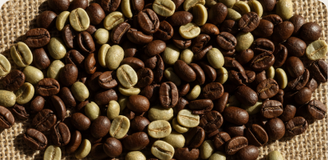
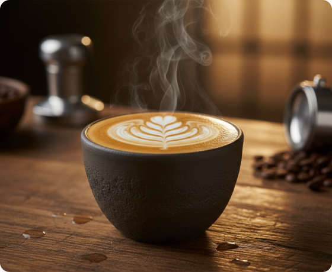
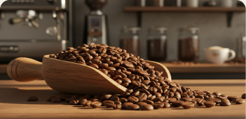
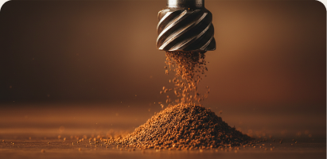
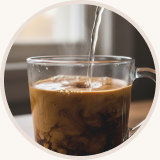
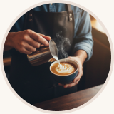
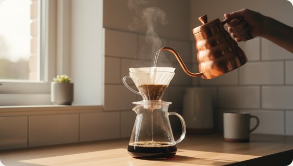
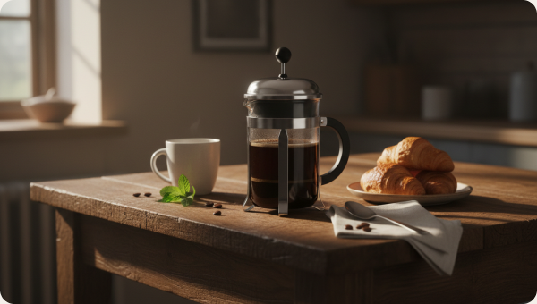
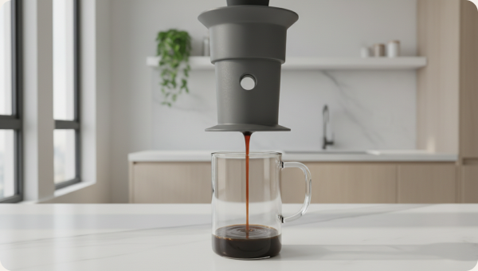

Bean Origins
From the volcanic soils of Ethiopia to the high peaks of Colombia, discover how geography shapes taste.
Learn the essentials of brewing, explore coffee types, and elevate your morning ritual. Mindful steps for perfect extractions.


From the volcanic soils of Ethiopia to the high peaks of Colombia, discover how geography shapes taste.

Light, medium, or dark? Learn how roasting duration unlocks floral, sweet, or bold smoky profiles.

Coarse for French Press, fine for Espresso. Perfecting your grind is the secret to extracting balanced flavour.



A meditative brewing method that highlights the complex, delicate tasting notes of light roast coffees. Hot water is steadily poured over a paper filter, resulting in a remarkably clean, sediment-free cup that exposes subtle floral and fruity tones.

The quintessential immersion brewer. By steeping ground coffee directly in boiling water before pressing down a metal mesh plunger, you extract a full-bodied, robust brew with a heavy mouthfeel and rich natural oils that paper filters often trap.

Fast, incredibly versatile, and virtually indestructible. Using air pressure to force water through coffee grounds, the AeroPress allows you to experiment with brew times, temperatures, and grind sizes to craft anything from a light filter style to an espresso-strength shot.
Grind your beans right before brewing. Roasted coffee starts losing flavour notes within fifteen minutes of grinding.
If your tap water doesn't taste good, your coffee won't either. Use filtered, odor-free water for a cleaner profile.
Start with 1 gram of coffee to 16 grams of water (1:16), then adjust up or down to match your strength preference.
Aim for 90°C to 96°C. Boiling water scorches the grounds, while cool water results under-extracted, sour cups.
Keep your beans in a cool, dark, airtight container. Avoid storing them in the fridge where they can absorb condensation.